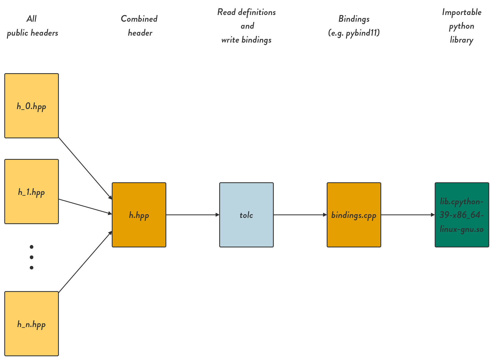

CMake Interface
The CMake interface is used to gather information about the library you wish to translate to another language. It is a convenient wrapper around the tolc executable for those who use CMake as their build suite.
Tolc CMake interface
The main interface is through tolc_create_bindings. Example usage:
# This function comes from the tolc package itself
# Creates the target example_python that can be imported and used from python
tolc_create_bindings(
# Target to translate from
TARGET example
# Language to target
LANGUAGE python
# Where to put the bindings
OUTPUT ${CMAKE_CURRENT_BINARY_DIR}/python-bindings
)
This assumes there is a CMake target called example that has some include directories marked either PUBLIC or INTERFACE. It will look through these directories for header files (any files ending in .h or .hpp) and export everything inside them to python via pybind11. It will then create the target example_python that can be used to compile an importable CPython library. The following figure shows the whole process:

Complete example
cmake_minimum_required(VERSION 3.15)
project(tolc-demo LANGUAGES CXX)
add_library(Math src/Demo/demo.cpp)
target_include_directories(Math PUBLIC include)
set_target_properties(
Math
PROPERTIES
CXX_STANDARD
17
CXX_STANDARD_REQUIRED
ON
CXX_EXTENSIONS
OFF
)
include(FetchContent)
FetchContent_Declare(
tolc_bootstrap
GIT_REPOSITORY https://github.com/Tolc-Software/bootstrap-tolc-cmake
GIT_TAG main
)
FetchContent_MakeAvailable(tolc_bootstrap)
get_tolc()
tolc_create_bindings(
TARGET Math
LANGUAGE python
OUTPUT ${CMAKE_CURRENT_BINARY_DIR}/python-bindings
)
You can find full project examples on the Tolc-Software github page.